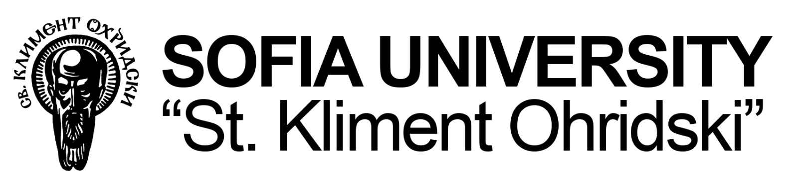
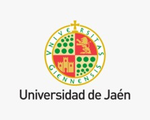

<!DOCTYPE html>
<html lang="en">

<head>
  <meta charset="utf-8">
  <meta content="width=device-width, initial-scale=1.0" name="viewport">

  <title>SPELLL 2025 :: WELCOME PAGE</title>
  <meta content="" name="descriptison">
  <meta content="" name="keywords">

  <!-- Favicons -->
  <link href="assets/img/favicon.png" rel="icon">
  <link href="assets/img/apple-touch-icon.png" rel="apple-touch-icon">

  <!-- Google Fonts -->
  <link href="https://fonts.googleapis.com/css?family=Open+Sans:300,300i,400,400i,600,600i,700,700i|Raleway:300,300i,400,400i,500,500i,600,600i,700,700i|Poppins:300,300i,400,400i,500,500i,600,600i,700,700i" rel="stylesheet">

  <!-- Vendor CSS Files -->
  <link href="assets/vendor/bootstrap/css/bootstrap.min.css" rel="stylesheet">
  <link href="assets/vendor/icofont/icofont.min.css" rel="stylesheet">
  <link href="assets/vendor/boxicons/css/boxicons.min.css" rel="stylesheet">
  <link href="assets/vendor/venobox/venobox.css" rel="stylesheet">
  <link href="assets/vendor/line-awesome/css/line-awesome.min.css" rel="stylesheet">
  <link href="assets/vendor/owl.carousel/assets/owl.carousel.min.css" rel="stylesheet">
  <link href="assets/vendor/aos/aos.css" rel="stylesheet">

  <!-- Template Main CSS File -->
  <link href="assets/css/style.css" rel="stylesheet">

  <!-- =======================================================
  * Template Name: ssn - v2.1.0
  * Template URL: https://bootstrapmade.com/ssn-bootstrap-corporate-template/
  * Author: BootstrapMade.com
  * License: https://bootstrapmade.com/license/
  ======================================================== -->
  <style>
    /* Previous styles remain the same until the leadership section */
  
    /* Leadership Section Styles */
    .leadership-container {
      display: flex;
      flex-wrap: wrap;
      justify-content: center;
      gap: 20px;
      width: 100%;
      max-width: 1200px;
      padding: 20px;
      box-sizing: border-box;
    }
    
    .leader {
      background-color: #fff;
      padding: 20px;
      border-radius: 8px;
      box-shadow: 0 0 10px rgba(0, 0, 0, 0.1);
      text-align: center;
      width: calc(50% - 20px); /* Two per row on desktop */
      box-sizing: border-box;
      margin-bottom: 20px;
    }
    
    .leader img {
      width: 150px;
      height: 150px;
      border-radius: 50%;
      object-fit: cover;
      margin-bottom: 15px;
    }
    
    .leader-name {
      font-size: 18px;
      font-weight: bold;
      color: #333;
      margin-bottom: 5px;
    }
    
    .leader-title {
      font-size: 14px;
      color: #666;
    }
    
    h2 {
      text-align: center;
      width: 100%;
      margin-bottom: 20px;
    }
    
    .single-row-container {
      display: flex;
      justify-content: center;
      width: 100%;
      padding: 20px;
      box-sizing: border-box;
    }
    
    .single-row-container .leader {
      width: calc(60%);
    }
  
    /* Mobile Responsiveness */
    @media (max-width: 767px) {
  /* Content Section Alignment */
  .container {
    width: 100%;
    max-width: 1200px;
    margin: 0 auto;
    padding: 0 20px;
    box-sizing: border-box;
  }

  .row.mt-5.p-4 {
    width: 100%;
    margin: 0 auto;
    padding: 0 15px;
    box-sizing: border-box;
  }

  /* Leadership Section Styles */
  .leadership-container {
    display: flex;
    flex-wrap: wrap;
    justify-content: center;
    gap: 20px;
    width: 100%;
    max-width: 1200px;
    padding: 20px;
    box-sizing: border-box;
    margin: 0 auto;
  }
  
  .leader {
    background-color: #fff;
    padding: 20px;
    border-radius: 8px;
    box-shadow: 0 0 10px rgba(0, 0, 0, 0.1);
    text-align: center;
    width: calc(50% - 20px);
    box-sizing: border-box;
    margin-bottom: 20px;
  }
  
  .leader img {
    width: 150px;
    height: 150px;
    border-radius: 50%;
    object-fit: cover;
    margin-bottom: 15px;
  }
  
  .leader-name {
    font-size: 18px;
    font-weight: bold;
    color: #333;
    margin-bottom: 5px;
  }
  
  .leader-title {
    font-size: 14px;
    color: #666;
  }
  
  h2 {
    text-align: center;
    width: 100%;
    margin-bottom: 20px;
  }
  
  .single-row-container {
    display: flex;
    justify-content: center;
    width: 100%;
    padding: 20px;
    box-sizing: border-box;
    margin: 0 auto;
  }
  
  .single-row-container .leader {
    width: calc(60%);
  }

  /* Mobile Responsiveness for Content and Leadership Only */
  @media (max-width: 767px) {
    /* Content alignment */
    .row.mt-5.p-4 {
      padding: 0 15px;
      text-align: justify;
    }
    
    /* Leadership container */
    .leadership-container {
      flex-direction: column;
      align-items: center;
      padding: 10px;
    }
    
    .leader {
      width: 100% !important;
      max-width: 300px;
      margin-bottom: 15px;
    }
    
    .leader img {
      width: 120px;
      height: 120px;
    }
    
    .leader-name {
      font-size: 16px;
    }
    
    .leader-title {
      font-size: 13px;
    }
    
    h2 {
      font-size: 1.3rem;
      margin-bottom: 15px;
    }
    
    .single-row-container {
      padding: 10px;
    }
    
    .single-row-container .leader {
      width: 100% !important;
      max-width: 300px;
    }
  }
}
</style>
</head>

<body>

  <!-- ======= Header ======= -->
  <header id="header" class="fixed-top">
    <div class="d-flex">
      <div class="logo mr-auto">
        <a href="About IIITK.html"></a>
      </div>

      <nav class="nav-menu d-none d-lg-block topnav navbar">
        <ul id="old">
          <li><a href="index.html">Home</a></li>
          <li class="active"><a href="About IIITK.html">About IIITK</a></li>
          <li><a href="committee.html">Committee</a></li>
          <li><a href="speakers.html">Keynote Talks</a></li>
          <li><a href="callforpapers.html">Call For Papers</a></li>
          <li><a href="schedule.html">Schedule</a></li>
          <li><a href="imp-dates.html">Important Dates</a></li>
          <li><a href="workshop.html">Workshop</a></li>
          <li><a href="tutorials.html">Tutorials</a></li>
          <li style="font-family: -apple-system, BlinkMacSystemFont, "Segoe UI", Roboto, "Helvetica Neue", Arial, sans-serif;">
            <div class="dropdown">
              <button class="dropbtn"> Previous Conferences <i class="fa fa-caret-down"></i></button>
              <div class="dropdown-content">
                <a href="SPELLL2024\index.html" target="_blank">SPELLL 2024</a>
                <a href="https://link.springer.com/book/9783031584947" target="_blank">Proceedings of SPELLL 2024</a>
                <a href="SPELLL2023\index.html" target="_blank">SPELLL 2023</a>
                <a href="https://link.springer.com/book/10.1007/978-3-031-33231-9" target="_blank">Proceedings of SPELLL 2023</a>
              </div>
            </div>
          </li>
          <li><a href="registration.html">Registration</a></li>
          <li><a href="sponsor.html">Sponsorship</a></li>
          <li><a href="contact.html">Contact</a></li>
        </ul>
      </nav><!-- .nav-menu -->
    </div>
  </header><!-- End Header -->
  
  <!-- ======= Hero Section ======= -->
  <section id="hero"
         style="height: 60vh;
                background-size:cover;
                background-position:center;
                animation: backgroundSlide 30s infinite linear;
         "
  >
    <div class="hero-container " data-aos="fade-up" >
      <div >
        <br>
        <h1 id="old" style="font-family: 'Times New Roman', Times, serif;">Welcome to SPELLL 2025</h1></br>
        <h2 id="old" style="font-family: 'Times New Roman', Times, serif;">FOURTH INTERNATIONAL CONFERENCE ON SPEECH AND LANGUAGE TECHNOLOGIES </br></br> FOR LOW-RESOURCE LANGUAGES</h2>
        <h3 id="old" style="font-family: 'Times New Roman', Times, serif;">December 18-20, 2025</h3></br>
        <h3 id="old" style="font-family: 'Times New Roman', Times, serif;">Indian Institute of Information Technology(IIIT), Kottayam, INDIA</h3>
      </div>

      <!--<a href="#about" class="btn-get-started scrollto">Get Started</a>-->
    </div>
  </section><!-- End Hero -->
  <style>
    @keyframes backgroundSlide {
      0% {background: url('assets/img/iiitk.png') no-repeat center center/cover;}
      25% {background: url('assets/img/iiitk2.png') no-repeat center center/cover;}
      50% {background: url('assets/img/iiitk3.png') no-repeat center center/cover;}
      75% {background: url('assets/img/iiitk4.png') no-repeat center center/cover;}
      100% {background: url('assets/img/iiitk.png') no-repeat center center/cover;}
    }
  </style>

  <main id="main">

    <!-- ======= About Section ======= -->
    <section id="about" class="about">
      <div class="container" data-aos="fade-up">


        <div class="row mt-5 p-4">
          <style>
          .center-div {
            display: flex;
            margin-left: auto;
            margin-right: auto;
          }
          .logo-size {
    width: 250px; /* Adjust the width as needed */
    height: 200px; /* Adjust the height as needed */
    object-fit: contain; /* This ensures the aspect ratio is preserved */
}

          </style>
           
          <!-- <div class="col-lg-4 video-box align-self-baseline"> -->
          <!---->
          <!-- <br> -->
          <div class="row mt-5 p-4" style="text-align: justify; margin-right: 30px;">
            <div class="row mt-5 p-4" style="text-align: justify; margin-right: 30px; font-family: 'Arial', sans-serif; line-height: 1.6; color: #333;">
                <!-- About IIITK Section -->
                <section>
                  <h2 style=" font-family:'Times New Roman', Times, serif;">About IIITK</h2>
                  <p>Indian Institute of Information Technology, Kottayam (IIIT Kottayam) is an Institute of National Importance, established in 2015 by an act of the Parliament under the Ministry of Education, Government of India. The institute offers a 4-year B.Tech and B.Tech (Hons.) program in frontier areas of ECE, CSE, Cybersecurity, AI, and Data Science. The Integrated M.Tech program (with BCA-MCA) in AI & Data Science at IIIT Kottayam is designed for students who have completed their higher secondary education in Science with Mathematics/Diploma or equivalent. M.Tech courses are organized exclusively for working professionals in Artificial Intelligence & Data Science, Cyber Security, and CSE with specialization in Big Data & Machine Learning. The Institute awards the Degree of Doctor of Philosophy (Ph.D.) under ECE, Computational Mathematics, and CSE.</p>
                  <p><b>Topmost IIIT in India:</b> IIIT Kottayam is recognized as one of the premier IIITs in India, known for its unwavering commitment to promoting a culture of innovation and academic excellence. With a distinguished faculty comprising experts in various fields and a comprehensive, forward-thinking curriculum, the institute ensures that students receive a top-tier education. The institute’s emphasis on research, industry collaborations, and hands-on learning equips students with the skills and knowledge required to excel in today's fast-evolving technological landscape. The institute's dedication to fostering critical thinking, creativity, and problem-solving abilities further cements its reputation as a leading centre for higher education in India.
                  </p>
                  <p><b>High-Quality Education:</b> Our curriculum at IIIT Kottayam is meticulously designed to develop innovative thinkers and future leaders in technology. The institute has a robust academic community, comprising experienced professors, dedicated Ph.D. scholars, postdoctoral researchers, and a diverse student body from across the country. This dynamic environment fosters collaborative learning and encourages intellectual curiosity, ensuring that students are well-prepared to tackle real-world challenges. By integrating cutting-edge research with practical applications, institute provides a highquality education that equips students with the skills and knowledge necessary to thrive in their chosen fields.</p>
                <!-- More Button for IIITK -->
                  <a href="https://iiitkottayam.ac.in/#!/home" target="_blank" style="text-decoration: none;">
                    <button style="background-color: green; color: white; border: none; padding: 10px 20px; font-size: 16px; cursor: pointer; border-radius: 5px;">
                      More
                    </button>
                  </a>
                </section>
                <br>
                
              <section style="width: 100%;">
                <style>
                  body {
                    font-family: Arial, sans-serif;
                    background-color: #f4f4f4;
                    margin: 0;
                    padding: 0;
                    display: flex;
                    justify-content: center;
                    align-items: center;
                    flex-direction: column;
                  }
                  .leadership-container {
                    display: flex;
                    flex-wrap: wrap;
                    justify-content: center;
                    gap: 20px;
                    width: 100%;
                    max-width: 1200px;
                    padding: 20px;
                    box-sizing: border-box;
                  }
                  .leader {
                    background-color: #fff;
                    padding: 20px;
                    border-radius: 8px;
                    box-shadow: 0 0 10px rgba(0, 0, 0, 0.1);
                    text-align: center;
                    width: calc(48.5% - 10px); /* Adjusted width for two columns */
                    box-sizing: border-box;
                  }
                  .leader img {
                    width: 150px;
                    height: 150px;
                    border-radius: 50%;
                    object-fit: fill;
                    margin-bottom: 15px;
                  }
                  .leader-name {
                    font-size: 18px;
                    font-weight: bold;
                    color: #333;
                    margin-bottom: 5px;
                  }
                  .leader-title {
                    font-size: 14px;
                    color: #666;
                  }
                  h2 {
                    text-align: center;
                    width: 100%;
                    margin-bottom: 20px;
                    padding: 0 20px; /* Added padding for better spacing */
                  }
                  .single-row-container {
                    display: flex;
                    justify-content: center;
                    width: 100%;
                    padding: 20px;
                    box-sizing: border-box;
                  }
                  .single-row-container .leader {
                    width: calc(60%);
                  }
                </style>
              
                <!-- First Row: Chief Patrons -->
                <h2>Chief Patrons</h2>
                <div class="leadership-container">
                  <!-- Leader 1 -->
                  <div class="leader">
                    
                    <div class="leader-name">Prof. Dr. Prasad Krishna</div>
                    <div class="leader-title">Director (Addl. charge), IIIT Kottayam</div>
                  </div>
                  <!-- Leader 2 -->
                  <div class="leader">
                    
                    <div class="leader-name">Dr. M. Radhakrishnan</div>
                    <div class="leader-title">Registrar, IIIT Kottayam</div>
                  </div>
                </div>
              
                <!-- Second Row: Patrons -->
                <h2>Patrons</h2>
                <div class="single-row-container">
                  <div class="leader">
                    
                    <div class="leader-name">Prof P. Mohanan</div>
                    <div class="leader-title">Professor In-Charge, IIIT Kottayam</div>
                  </div>
                </div>
              
                <!-- Third Row: Co-Patrons -->
<h2>Co-Patrons</h2>
<div class="leadership-container">
  <!-- Leader 1 -->
  <div class="leader">
    
    <div class="leader-name">Dr. Ebin Deni Raj</div>
    <div class="leader-title">Associate Dean-Academics, IIIT Kottayam</div>
  </div>
  <!-- Leader 2 -->
  <div class="leader">
    
    <div class="leader-name">Dr Jayakrushna Sahoo </div>
    <div class="leader-title">HOD-CSE-I, IIIT Kottayam</div>
  </div>
  <!-- Leader 3 -->
  <div class="leader">
    
    <div class="leader-name">Dr Rubien Mary Lincy </div>
    <div class="leader-title">HOD-CSE-II, IIIT Kottayam</div>
  </div>
  <!-- Leader 4 -->
  <div class="leader">
    
    <div class="leader-name">Dr Panchami V</div>
    <div class="leader-title">HOD-Cyber Security, IIIT Kottayam</div>
  </div>
  <!-- Leader 5 -->
  <div class="leader">
    
    <div class="leader-name">Dr Ananth A </div>
    <div class="leader-title">HOD-ECE, IIIT Kottayam</div>
  </div>
  <!-- Leader 6 -->
  <div class="leader">
    
    <div class="leader-name">Dr Dhanyamol M V </div>
    <div class="leader-title">HOD-Computational Science & Humanities, IIIT Kottayam</div>
  </div>
</div>
              </section>

              

           <!--   -->
          <!---->
          <!---->
          <!-- 
          
           
         
                  
                      
                
            
                    
               -->
            
          </div>

          <!-- <div class="col-lg-8 pt-3 pt-lg-0 content">
            <p id="old" align = "justify"><font color='black'>
              &nbsp;&nbsp;&nbsp;&nbsp;&nbsp;The SPELLL-2024 conference, scheduled to take place at the Vellore Institute of Technology (VIT), Chennai, INDIA 
              on December 04-06, 2024, is poised to be a pivotal event in the field of Speech and Language Technology,
               especially for low-resource languages. This Third edition of the International Conference on Speech &
                Language Technology for Low-resource Languages (SPELLL) is dedicated to the advancement and preservation
                 of speech and language data technologies for less commonly used languages, focusing on their integration
                  into the digital era and utilization in various industries, humanities, and social sciences. </font>      
                </p>
   
               <p id="old" align = "justify"><font color='black'>&nbsp;&nbsp;&nbsp;&nbsp;&nbsp;
               In a world where internet usage is escalating and most global languages have transitioned smoothly 
               into the digital age, the plight of approximately 10000+ languages, especially regional and 
               low-resource ones, is often overlooked. These languages, lacking in technological development,
                face the imminent threat of extinction. SPELLL-2024 aims to counter this by congregating
                 researchers worldwide who specialize in these low-resourced and minority languages. The
                  goal is to foster the development of speech and language technologies to preserve the 
                  linguistic and cultural heritage of these languages.
   
               </font></p>
              
               <p id="old" style="font-size: 20px;"><font color="blue">Key objectives of SPELLL-2024 include:</font></p> 
               <p id="old" align = "justify"><font color='black'></font>
                <ul style="list-style-type: disc; margin-left:60px;">
                <li style="padding-left: 10px;" >Exploring challenges in creating speech and language resources for low-resource languages.</li>
                <li style="padding-left: 10px;">Advancing research in speech and language technology tailored to these languages.</li>
                <li style="padding-left: 10px;">Developing and implementing appropriate language technology models for low-resource languages.</li>
                <li style="padding-left: 10px;">Encouraging the integration of multimodal and generative AI technologies to enhance language processing capabilities.</li>
                <li style="padding-left: 10px;">Creating a collaborative platform for researchers from low-resource language communities around the globe.</li>
                <li style="padding-left: 10px;">Establishing and ensuring ethical research and development practices that guarantee unbiased and fair outcomes.</li>
              </ul>
                <p id="old" style="font-size: 15px; "><font color="black">
                By incorporating cutting-edge areas like multimodal and generative AI into its framework, SPELLL-2024 aims not only to preserve the linguistic diversity of the world but also to ensure that these languages thrive in the modern digital era. This conference stands as a critical junction for academic, technological, and cultural exchange, driving forward the mission to keep the world's linguistic heritage vibrant and accessible in the age of advanced AI. This conference is not just an academic gathering but a crucial step towards ensuring the longevity and relevance of the world's linguistic diversity in the digital age.
                            
                            </font></p>
           
          </div> -->

        </div>

      </div>
    </section><!-- End About Section -->
    
    

    <!-- ======= update Section =======
    <section id="update" class="update">
      <div class="container" data-aos="fade-in">

        <div class="section-title" data-aos="fade-up">
          <h2 style="color: aliceblue;">UPDATES</h2>
        </div>

        <div class="row justify-content-center">
          <div class="col-lg-5 pt-4 pt-lg-0 content " data-aos="fade-left" >
            <ul id="old">
              <li><a href="about.html#important_date">Program Schedule</a> Feb 14</li>
              <li><a href="registration.html">Registration</a> begin ! Feb 1st </li>
              <li><a href="callforpapers.html">List of selected papers.</a> Jan 30th</li>
              <li><a href="travelnstay.html">Accommodation</a> updated. Jan 25th</li>
              <li>Submission <b>CLOSED:</b><br>
                 <del>December 15, 2019</del><br>
                 <del>December 29, 2019</del></li>
              <li>Published volume will be indexed in <i>CPCI, ACM Digital, EI, DBLP, Google Scholar, Scopus.</i></li>
              <li>Aug 22nd, IFIP AICT Series (final approval pending)</li>
              <li>July 8th 2019, ICCIDS 2020 is an <a href="https://www.ifip.org//" target="_blank">IFIP</a> event now!</li>
              <li>Dr. Ulrich Furbach, Universität Koblenz-Landau, Dr. Ashish Gosh, ISI-Kolkatta - program committee members.</li>
              <li>May 7th 2019, <a href="callforpapers.html">The Call for Papers</a> is out.</li>
              <li>May 6th 2019, the website is online!</li>
            </ul>

          </div>
        </div>

      </div>
    </section><!-- End Our Skills Section -->

 <!--   <!-- ======= speakers Section =======
    <section id="speakers" class="speakers  section-bg ">
      <div class="container">

        <div class="section-title pt-5" data-aos="fade-up">
          <h2 id="old">INVITED SPEAKERS</h2>
        </div>

        <div class="row">
          <div class="col-md-6">
            <div class="icon-box" data-aos="fade-up">
              <div class="icon "></div>
              <h4 id="old" class="title"><a href="speakers/Gabriella_Pasi.html">Gabriella Pasi<br>Università degli Studi di Milano-Bicocca, Italy</a></h4>
              <p id="old" class="description"><b><i>Talk: The assessment of Information Credibility in the Social Web</i></b></p>
            </div>
          </div>
          <div class="col-md-6">
            <div class="icon-box" data-aos="fade-up">
              <div class="icon "></div>
              <h4 id="old" class="title"><a href="speakers/Gabriella_Pasi.html">Gabriella Pasi<br>Università degli Studi di Milano-Bicocca, Italy</a></h4>
              <p id="old" class="description"><b><i>Talk: The assessment of Information Credibility in the Social Web</i></b></p>
            </div>
          </div>

          <div class="col-md-6">
            <div class="icon-box" data-aos="fade-up">
              <div class="icon "></div>
              <h4 id="old" class="title"><a href="speakers/Gabriella_Pasi.html">Gabriella Pasi<br>Università degli Studi di Milano-Bicocca, Italy</a></h4>
              <p id="old" class="description"><b><i>Talk: The assessment of Information Credibility in the Social Web</i></b></p>
            </div>
          </div>
          <div class="col-md-6">
            <div class="icon-box" data-aos="fade-up">
              <div class="icon "></div>
              <h4 id="old" class="title"><a href="speakers/Gabriella_Pasi.html">Gabriella Pasi<br>Università degli Studi di Milano-Bicocca, Italy</a></h4>
              <p id="old" class="description"><b><i>Talk: The assessment of Information Credibility in the Social Web</i></b></p>
            </div>
          </div>
        </div>

      </div>
    </section><!-- End speakers Section -->

  </main><!-- End #main -->
   <!-- ======= Footer ======= -->
      <!-- ======= Footer ======= -->
      <footer id="footer" style="width: 100%;">
        <div class="footer-top">
          <div class="container">
            <div class="row">
    
    
              <div class="col-lg-6 col-md-6 footer-contact">
                <h4 id="old">Conference Venue</h4>
                  
                 <p>
                  Indian Institute of Information Technology,  <br>
                  Valavoor.P.O &#8722; Pala,<br> 
                  Kottayam  &#8722; 686635,<br>
              Kerala, INDIA<br>
        <br>
                </p>
              </div>
    
              <div class="col-lg-6 col-md-6 footer-newsletter">
                <h4 id="old">SOCIAL MEDIA LINKS</h4>
                <div class="social-links">
                 <a href="https://twitter.com/IIITKKottayam" class="twitter" target="_blank"><i class="icofont-twitter"></i></a>
                  <a href="https://www.facebook.com/IIITKottayamofficial/" class="facebook" target="_blank"><i class="icofont-facebook"></i></a>
                  <a href="https://www.instagram.com/iiitkottayam/" class="instagram" target="_blank"><i class="icofont-instagram"></i></a>
                  <a href="https://www.youtube.com/channel/UC3jrKDXjl7_c5bld5x8C1vw" class="youtube" target="_blank"><i class="icofont-youtube"></i></a>
                  <a href="https://www.linkedin.com/in/iiit-kottayam" class="linkedin" target="_blank"><i class="icofont-linkedin"></i></a>
                </div>
    
                </div>
    
            </div>
          </div>
        </div>
    
        <div class="container">
          <div class="copyright">
            &copy; Copyright <strong><span>IIITK</span></strong>. All Rights Reserved
          </div>
    
        </div>
      </footer><!-- End Footer -->


  <a href="#" class="back-to-top"><i class="icofont-simple-up"></i></a>

  <!-- Vendor JS Files -->
  <script src="assets/vendor/jquery/jquery.min.js"></script>
  <script src="assets/vendor/bootstrap/js/bootstrap.bundle.min.js"></script>
  <script src="assets/vendor/jquery.easing/jquery.easing.min.js"></script>
  <script src="assets/vendor/php-email-form/validate.js"></script>
  <script src="assets/vendor/waypoints/jquery.waypoints.min.js"></script>
  <script src="assets/vendor/counterup/counterup.min.js"></script>
  <script src="assets/vendor/venobox/venobox.min.js"></script>
  <script src="assets/vendor/owl.carousel/owl.carousel.min.js"></script>
  <script src="assets/vendor/isotope-layout/isotope.pkgd.min.js"></script>
  <script src="assets/vendor/aos/aos.js"></script>

  <!-- Template Main JS File -->
  <script src="assets/js/main.js"></script>

</body>

</html>
